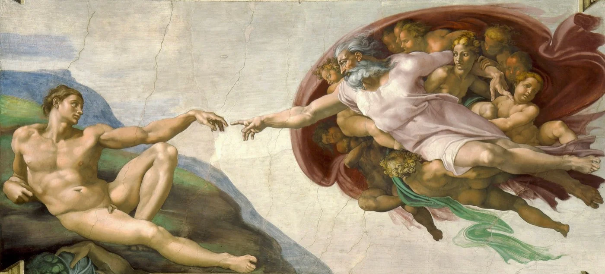
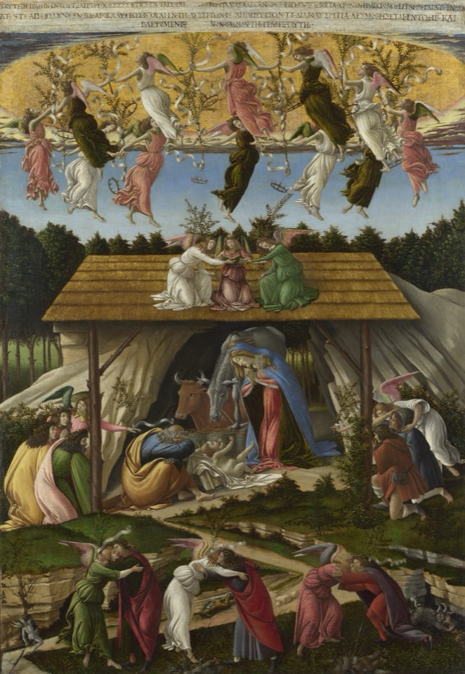
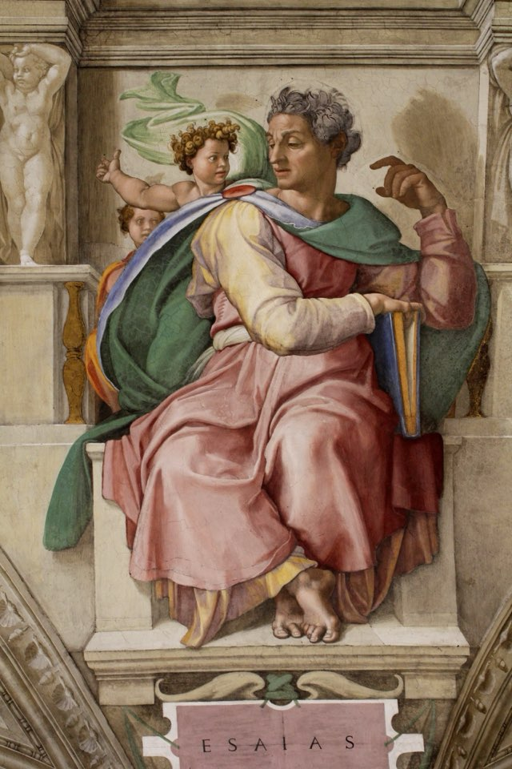
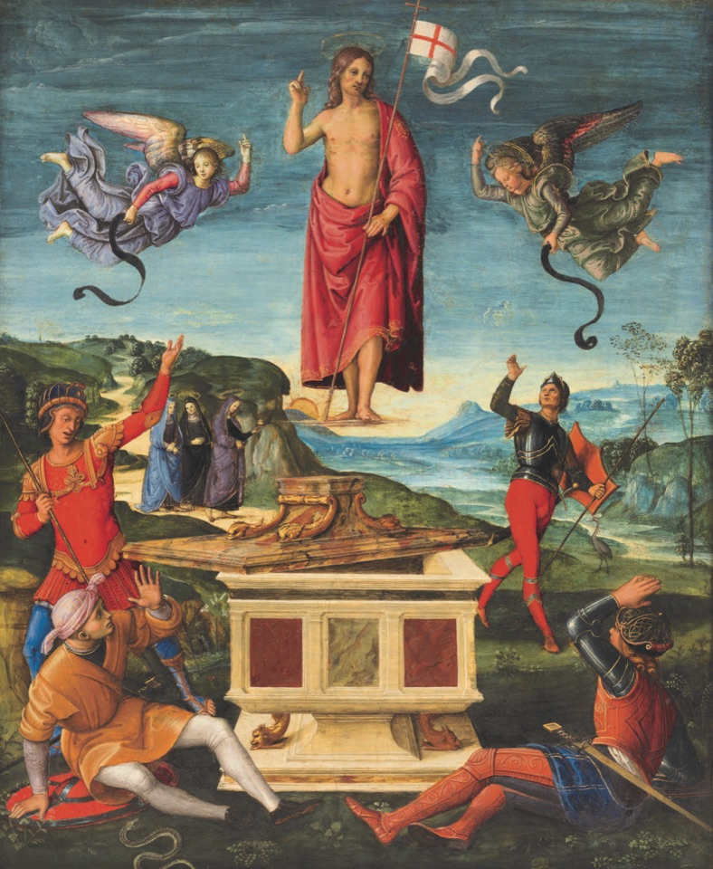
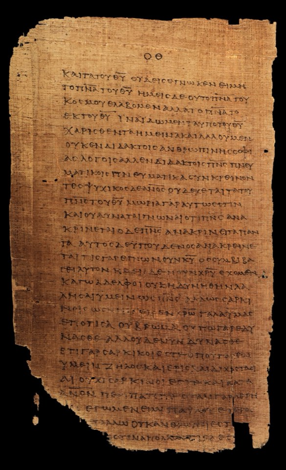

and the most closely examined. Here is every witness that survives, in their own words.
“That you might know the certainty”





Seven halls of witness
Each hall holds one kind of witness. The writings in each are arranged in the order in which they were written.
Scripture
Witnesses
Two thousand years
From the Isaiah scroll copied before his birth to statements issued in our own decade. Drag through the years.
Before his birth
740 BCHosea 11: the son called out of EgyptHosea: out of Egypt I called my son720 BCMicah 5: out of BethlehemMicah: the ruler from Bethlehem700 BCPsalms 2, 16, 22, 34, 41, 69, 110 and 118Psalms: the songs read of the Messiah700 BCIsaiah 7, 9, 40, 49, 52–53 and 61Isaiah: the chapters read as prophecy600 BC2 Samuel 7: a house for David2 Samuel: the promise to David600 BCJeremiah 31: the new covenantJeremiah: Rachel’s weeping and the new covenant600 BCJonah 1: the prophet and the great fishJonah: three days in the fish530 BCDaniel 7: one like a son of manDaniel: the vision of the Son of Man500 BCGenesis 12: the promise to AbrahamGenesis: the call of Abraham500 BCExodus 12: the Passover lambExodus: the first Passover500 BCNumbers 21 and 24: the serpent and the starNumbers: the bronze serpent and the star500 BCJoel 2: the Spirit on all fleshJoel: the Spirit poured out500 BCZechariah 9, 11, 12 and 13Zechariah: the humble king and the stricken shepherd125 BCThe Great Isaiah ScrollThe Great Isaiah Scroll (1QIsaᵃ)80 BCPool of Siloam, JerusalemThe Pool of Siloam (Jerusalem)The apostolic age
AD 20Nazareth inscription (tomb edict)The Nazareth inscriptionAD 30Magdala Stone, GalileeThe Magdala Stone (Galilee)AD 30Pool of Bethesda, JerusalemThe Pool of Bethesda (Jerusalem)AD 31Pilate inscription, CaesareaThe Pilate inscription (Caesarea Maritima)AD 40Ossuary of “Joseph son of Caiaphas”The Caiaphas ossuaryAD 501 Thessalonians: the oldest letterPaul’s First Letter to the ThessaloniansAD 50Heel bone of YehohananThe heel bone of Yehohanan (Giv’at HaMivtar)AD 52Galatians: Paul meets Peter and JamesPaul’s Letter to the GalatiansAD 52Gallio inscription, DelphiThe Gallio inscription (Delphi)AD 541 Corinthians: the early creedPaul’s First Letter to the CorinthiansAD 552 Corinthians: Paul under firePaul’s Second Letter to the CorinthiansAD 55Philemon: a letter about OnesimusPaul’s Letter to PhilemonAD 55Q sayings source (reconstruction)Q: The Sayings Source (a Scholarly Reconstruction)AD 57Romans: Paul’s fullest letterPaul’s Letter to the RomansAD 57Philippians: the Christ hymnPaul’s Letter to the PhilippiansAD 62James ossuary (disputed)The James ossuary (disputed)AD 70Colossians: image of the invisible GodThe Letter to the ColossiansAD 70Mark: the earliest GospelThe Gospel of MarkAD 752 Thessalonians: the day of ChristThe Second Letter to the ThessaloniansAD 75Mara bar Serapion: the wise kingThe Letter of Mara bar Serapion to his SonAD 80Hebrews: the heavenly high priestThe Letter to the HebrewsAD 80James: faith and worksThe Letter of JamesAD 85Ephesians: one body in ChristThe Letter to the EphesiansAD 85Matthew: Jesus as teacher and MessiahThe Gospel of MatthewAD 85Luke: the orderly accountThe Gospel of LukeAD 85Acts: the first Christian communitiesThe Acts of the ApostlesAD 851 Peter: a witness of the sufferingsThe First Letter of PeterAD 90Jude: brother of JamesThe Letter of JudeAD 93Josephus on Jesus (Testimonium)Josephus, Jewish Antiquities, Book 18: the Testimonium Flavianum and John the BaptistAD 93Josephus on James, brother of JesusJosephus, Jewish Antiquities, Book 20: the death of James, brother of JesusAD 95John: the Word made fleshThe Gospel of JohnAD 95Revelation: the faithful witnessThe Revelation to JohnAD 961 Clement: Rome writes to CorinthThe First Epistle of Clement to the CorinthiansThe second century
AD 1001 Timothy: before Pontius PilateThe First Letter to TimothyAD 1002 Timothy: Paul’s farewellThe Second Letter to TimothyAD 100Titus: our great God and SaviorThe Letter to TitusAD 1001 John: what our hands touchedThe First Letter of JohnAD 1002 John: came in the fleshThe Second Letter of JohnAD 1003 John: for the sake of the NameThe Third Letter of JohnAD 100The DidacheThe Didache (The Teaching of the Twelve Apostles)AD 1102 Peter: eyewitnesses of his majestyThe Second Letter of PeterAD 110Ignatius to the SmyrnaeansIgnatius of Antioch, Letter to the SmyrnaeansAD 112Pliny asks Trajan about ChristiansPliny the Younger and Trajan, Letters 10.96–97: on the trials of ChristiansAD 116Tacitus on Christus and PilateTacitus, Annals 15.38–44: the Great Fire and Nero’s punishment of the ChristiansAD 120Suetonius on “Chrestus”Suetonius, Life of Claudius 25: the expulsion over “Chrestus”AD 120Papias on Mark and MatthewPapias of Hierapolis, FragmentsAD 125Hadrian’s rescript on ChristiansHadrian’s Rescript to Minucius Fundanus (Eusebius, Church History 4.9)AD 125Gospel of Thomas: 114 sayingsThe Gospel of ThomasAD 150Egerton Gospel: an unknown gospelThe Egerton Gospel (Papyrus Egerton 2)AD 150Infancy Gospel of ThomasThe Infancy Gospel of ThomasAD 150Gospel of PeterThe Gospel of Peter (Akhmim Fragment)AD 150Gospel of MaryThe Gospel of MaryAD 150Gospel of Judas (Codex Tchacos)The Gospel of JudasAD 150Secret Book of JamesThe Secret Book of James (Apocryphon of James)AD 153Justin: Christ, prophecy and SundayJustin Martyr, First ApologyAD 160Gospel of Truth (Valentinian)The Gospel of TruthAD 165Lucian mocks the ChristiansLucian of Samosata, The Passing of PeregrinusAD 170Infancy Gospel of JamesThe Infancy Gospel of James (Protevangelium of James)AD 170Tatian’s Diatessaron (c. 170)Tatian’s DiatessaronAD 175P.Oxy. 5575 sayings fragmentSayings of Jesus (Papyrus Oxyrhynchus 5575)AD 180Irenaeus: the Rule of FaithIrenaeus of Lyons, Against Heresies, Book IAD 180Irenaeus on the four GospelsIrenaeus of Lyons, Against Heresies, Book IIIPersecution and peace
AD 200Alexamenos graffito, RomeThe Alexamenos graffito (Palatine, Rome)AD 200Secret Gospel of Mark (disputed)The Secret Gospel of Mark (the Mar Saba Letter)AD 221Africanus on Thallus and PhlegonJulius Africanus on Thallus and Phlegon: the darkness at the crucifixionAD 225The Stranger’s Book (Allogenes)The Stranger’s Book (Allogenes, Codex Tchacos)AD 225Gospel of Philip (Nag Hammadi)The Gospel of PhilipAD 230Hippolytus on Noetus and CallistusHippolytus, Refutation of All Heresies, Book IXAD 230Megiddo mosaic: “to God Jesus Christ”The Megiddo mosaic (“God Jesus Christ”)AD 245Dura-Europos house churchThe Christian building at Dura-EuroposAD 248Origen answers Celsus on JesusOrigen, Against Celsus, Book IAD 250Frankfurt silver amuletThe Frankfurt silver amulet (Nida)AD 250Pistis Sophia (Askew Codex)Pistis SophiaAD 250Bruce Codex: Gnôsis of the LightThe Gnôsis of the Light (Untitled Text of the Bruce Codex)AD 320Eusebius on the life of JesusEusebius, Church History, Book IAD 320Eusebius on the Gospels and canonEusebius, Church History, Book IIIAD 320Eusebius on Quadratus and PolycarpEusebius, Church History, Book IVAD 320Eusebius on Irenaeus and the GospelsEusebius, Church History, Book VAD 367Athanasius lists the 27 booksAthanasius of Alexandria, Festal Letter 39The long memory
AD 400Acts of Pilate and Pilate lettersThe Gospel of Nicodemus (Acts of Pilate) and the Pilate LettersAD 550Talmud: the execution of YeshuBabylonian Talmud, Sanhedrin 43a: the baraita on YeshuAD 550Arabic Infancy Gospel; Abgar lettersHone’s Apocryphal New Testament: the Arabic Infancy Gospel and the Abgar LettersAD 616Qur’an 19: the chapter of MaryQur’an, Surah 19 (Maryam): MaryAD 627Qur’an 3: Mary, John and JesusQur’an, Surah 3 (Al ʿImran): The Family of ImranAD 627Qur’an 4: ‘they did not crucify him’Qur’an, Surah 4 (An-Nisa): WomenAD 627Qur’an 5: the table from heavenQur’an, Surah 5 (Al-Ma’idah): The Table1325Shroud of Turin: the dating debateThe Shroud of Turin: radiocarbon and later dating claimsOur own time
1965Nostra aetate (1965)Nostra aetate: The Church and Non-Christian Religions1992Catechism: true God and true manCatechism of the Catholic Church, sections 464–469: True God and True Man1994Catholic–Assyrian declaration, 1994Common Christological Declaration of the Catholic Church and the Assyrian Church of the East (1994)2024Dilexit nos (2024)Dilexit nos: Pope Francis on the Heart of Jesus2024Vatican norms on apparitions (2024)Norms for Discerning Alleged Supernatural PhenomenaThe art in these halls
The masterpieces that light this archive were painted and carved to the glory of God. Each has its own story of commission, craft and faith.
Visit the gallery